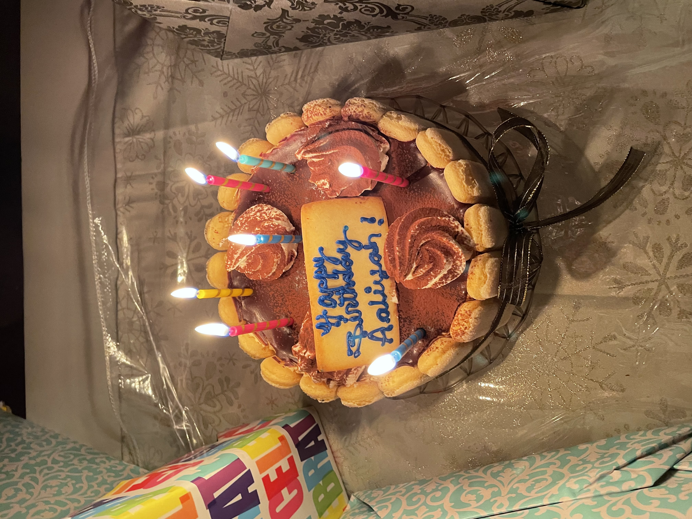

Places To Eat - Nyc
Coffee Shops - For Chai
- Little Canal
- Harry's Table
- Common Address
Brunch Spots
- Sonnyboy
- Henry & The Lions
- In Common Nyc
Small Lunch Spots
- Sushi Counter
- Pommes Fries
- Little Ruby's
Dinner Spots
- Da Andrea
- Ribalta
- Da Claudio
Desserts
